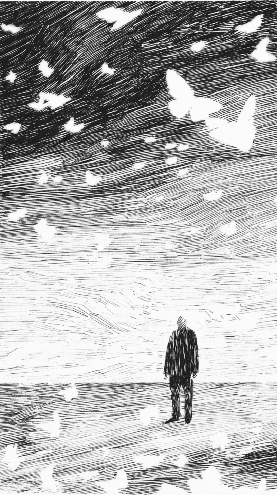

그가 내뱉은 모든 한숨이 하얀 나비가 되어 하늘로 날아오르는 것만 같았다. \
It seemed as if every sigh he exhaled turned into a white butterfly and flew up to the sky.
숨을 쉴 때마다 가슴속에서 무언가 부서져 나와, 희미한 온기를 머금은 채 입술을 떠났다. \
With every breath, something inside his chest seemed to break off and leave his lips, carrying a faint warmth.
그것들은 잠시 머뭇거리다 이내 하얀 날개를 펼치고는, 검은 캔버스 같은 하늘 위로 흩어지는 소금처럼 흩날렸다. \
They would hesitate for a moment before unfolding white wings, scattering like salt thrown onto a black canvas of a sky.
그는 고개를 들지 않았다. \
He did not raise his head.
그저 발끝에 시선을 고정한 채, 얼마나 많은 후회가 자신의 몸을 빠져나갔는지 가늠해볼 뿐이었다. \
Instead, with his gaze fixed on the tips of his shoes, he only tried to gauge how many regrets had escaped his body.
수백, 아니 수천의 말 없는 작별들이 바람을 타고 소용돌이쳤지만, 그의 세상은 이상할 정도로 고요했다. \
Hundreds, no, thousands of silent goodbyes swirled on the wind, but his world was strangely still.
또 다른 한숨이 그의 폐를 가득 채우며 다음 비상을 준비하고 있었다. \
Another sigh was filling his lungs, preparing for its next flight.